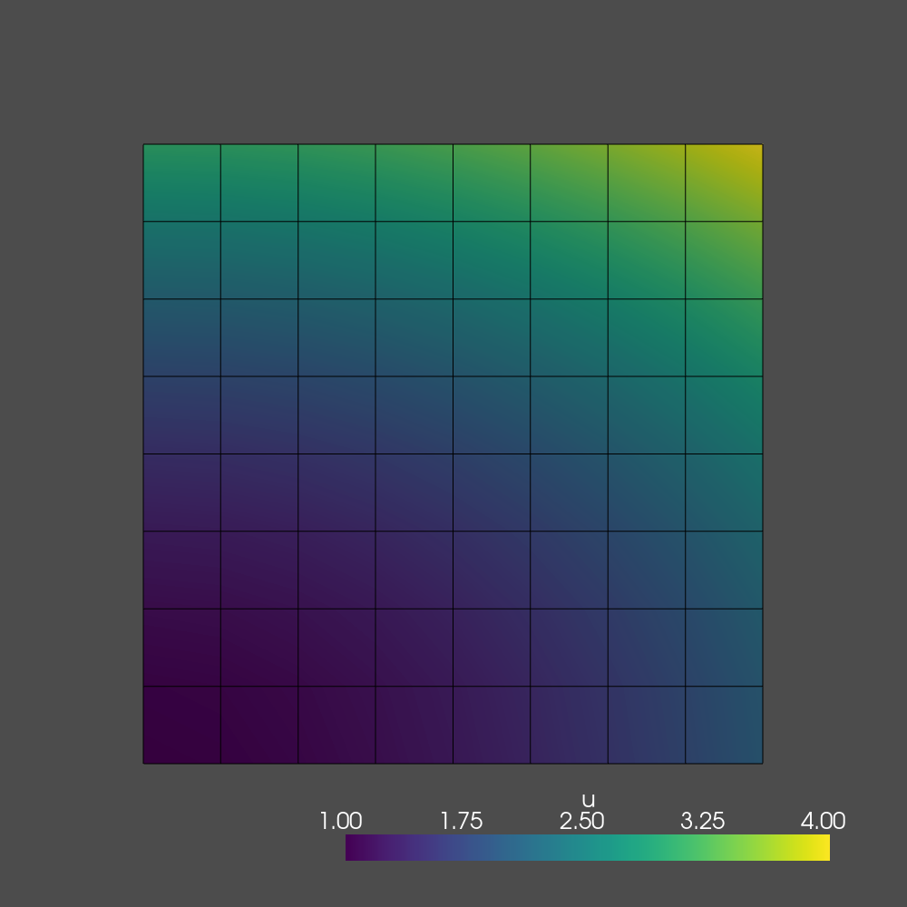

Implementation¶
Author: Jørgen Schartum Dokken
Based on work by: Hans Petter Langtangen, Anders Logg
In this section, you will learn:
How to use the built-in meshes in dolfin-x
How to create a Dirichlet boundary conditions on the whole domain boundary
How to define a weak formulation of your PDE
How to solve the resulting system of linear equations
How to visualize the solution using a variety of tools
How to compute the \(L^2(\Omega)\) error and the error at mesh vertices
Interactive tutorials¶
Run the tutorial as Jupyter notebook in browser
As this book has been published as a Jupyter Book, each code can be run in your browser as a Jupyter notebook. To start such a notebook click the rocket symbol in the top right corner of the relevant tutorial.
The Poisson problem has so far featured a general domain \(\Omega\) and general functions \(u_D\) for the boundary conditions and \(f\) for the right hand side. Therefore, we need to make specific choices of \(\Omega, u_D\) and \(f\). A wise choice is to construct a problem with a known analytical solution, so that we can check that the computed solution is correct. The primary candidates are lower-order polynomials. The continuous Galerkin finite element spaces of degree \(r\) will exactly reproduce polynomials of degree \(r\).
We use this fact to construct a quadratic function in \(2D\). In particular we choose
Inserting \(u_e\) in the original boundary problem, we find that
regardless of the shape of the domain as long as we prescribe \(u_e\) on the boundary.
For simplicity, we choose the domain to be a unit square \(\Omega=[0,1]\times [0,1]\)
This simple but very powerful method for constructing test problems is called the method of manufactured solutions. First pick a simple expression for the exact solution, plug into the equation to obtain the right-hand side (source term \(f\)). Then solve the equation with this right hand side, and using the exact solution as boundary condition. Finally, we create a program that tries to reproduce the exact solution.
Note that in many cases, it can be hard to determine if the program works if it produces an error of size \(10^{-5}\) on a \(20 \times 20\) grid. However, since we are using Sobolev spaces, we usually known about the numerical errors asymptotic properties. For instance that it is proportional to \(h^2\) if \(h\) is the size of a cell in the mesh. We can then compare the error on meshes with different \(h\)-values to see if the asymptotic behavior is correct. This technique will be explained in detail in the chapter Improving your fenics code.
However, in cases where we have a solution we know that should have no approximation error, we know that the solution should be produces to machine precision by the program.
The first eight lines of the program is importing the different modules required for solving the problem.
import dolfinx
import numpy
import ufl
from mpi4py import MPI
from petsc4py import PETSc
A major difference between a traditional FEniCS code and a FEniCS-X code, is that one is not advised to use the wildcard import. Instead of wrapping MPI and PETSc modules inside dolfin-X, we would like to directly use the modules, as they are well documented and makes dolfin-X easier to understand.
Generating simple meshes¶
The next step is to define the discrete domain, the mesh
mesh = dolfinx.UnitSquareMesh(MPI.COMM_WORLD, 8, 8, dolfinx.cpp.mesh.CellType.quadrilateral)
which defines a uniform finite element mesh over the unit square \([0,1]\times[0, 1]\). The mesh consists of cells, which in 2D can be either triangles of quadrilaterals. Note that in addition to give how many elements we would like to have in each direction.
Note that we also supply the MPI-communicator.
This is to specify how we would like the program to behave in parallel. If we supply MPI.COMM_WORLD we create a single mesh,
which data is distributed over the number of processors we
would like to use. We can for instance run the program in
parallel on two processors by using mpirun, as:
mpirun -n 2 python3 t1.py
However, if we would like to create a separate mesh on each processor, we can use MPI.COMM_SELF. This is for instance
useful if we run a small problem, and would like to run it with
multiple parameters.
Defining the finite element function space¶
Once the mesh has been created, we can create the finite element function space \(V\):
V = dolfinx.FunctionSpace(mesh, ("CG", 1))
The second argument is the tuple containing the type of finite element, and the element degree. The type of element here is “CG”, which implies the standard Lagrange family of elements. Dolfin-X supports a large variety on elements on simplices (triangles and tetrahedrons) and non-simplices (quadrilaterals and hexahedrons). For an overview, see: FIXME: Add link to all the elements we support
The element degree in the code is 1. This means that we are choosing the standard \(P_1\) linear Lagrange element, which has degrees of freedom at the vertices. The computed solution will be continuous across elements and linearly varying in \(x\) and \(y\) inside each element. Higher degree polynomial approximations is obtained by increasing the degree argument.
Defining the boundary conditions¶
The next step is to specify the boundary condition \(u=u_D\) on \(\partial\Omega_D\), which is done by over several steps. The first step is to define the function \(u_D\). Into this function, we would like to interpolate the boundary condition \(1 + x^2+2y^2\). We do this by first defining a dolfinx.Function, and then use a lambda-function in Python to define the
spatially varying function. As we would like this program to work on one or multiple processors, we have to update the coefficients of \(u_D\) that data shared between the processors. We do this by updating the ghost values in the PETScVector storing this data.
uD = dolfinx.Function(V)
uD.interpolate(lambda x: 1 + x[0]**2 + 2 * x[1]**2)
uD.vector.ghostUpdate(addv=PETSc.InsertMode.INSERT, mode=PETSc.ScatterMode.FORWARD)
We now have the boundary data (and in this case the solution of
the finite element problem) represented in the discrete function space.
Next we would like to apply the boundary values to all degrees of freedom that is on the boundary of the discrete domain. We start by identifying the facets (line-segments) representing the outer boundary, using dolfinx.cpp.mesh.compute_boundary_facets.
This function returns an array booleans of the same size as the number of facets on this processor, where True indicates that the local facet \(i\) is on the boundary. To reduce this to only the indices that are True, we use numpy.where.
fdim = mesh.topology.dim - 1
# Create facet to cell connectivity required to determine boundary facets
mesh.topology.create_connectivity(fdim, mesh.topology.dim)
boundary_facets = numpy.where(numpy.array(dolfinx.cpp.mesh.compute_boundary_facets(mesh.topology)) == 1)[0]
For the current problem, as we are using the “CG” 1 function space, the degrees of freedom are located at the vertices of each cell, thus each facet contains two degrees of freedom.
To find the local indices of these degrees of freedom, we se dolfinx.fem.locate_dofs_topological, which takes in the function space, the dimension of entities in the mesh we would like to identify and the local entities.
Local ordering of degrees of freedom and mesh vertices
Many people expect there to be a 1-1 correspondence between the mesh coordinates and the coordinates of the degrees of freedom.
However, this is only true in the case of CG 1 elements on a first order mesh. Therefore, in dolfinx we use separate local numbering for the mesh coordinates and the dof coordinates. To obtain the local dof coordinates we can use V.tabulate_dof_coordinates(), while the ordering of the local vertices can be obtained by mesh.geometry.x.
With this data at hand, we can create the Dirichlet boundary condition
boundary_dofs = dolfinx.fem.locate_dofs_topological(V, fdim, boundary_facets)
bc = dolfinx.DirichletBC(uD, boundary_dofs)
Defining the trial and test function¶
In mathematics, we distinguish between trial and test spaces \(V\) and \(\hat{V}\). The only difference in the present problem is the boundary conditions. In FEniCS-X, we do not specify boundary conditions as part of the function space, so it is sufficient to use a common space for the trial and test function:
u = ufl.TrialFunction(V)
v = ufl.TestFunction(V)
Defining the source term¶
As the source term is constant over the domain, we use dolfinx.Constant
f = dolfinx.Constant(mesh, -6)
Compilation speed-up
Instead of wrapping \(-6\) in a dolfinx.Constant, we could simply define $f$ as f=-6. However, if we would like to change this parameter at a later in the simulation, we would have to redefine our variational formulation. The dolfinx.Constantallows us to update the value in $f$ by usingf.value=5`. Additionally, by indicating that \(f\) is a constant, we speed of compilation of the variational formulations required for created the linear system.
Defining the variational problem¶
As we now have defined all variables used to describe our variational problem, we can create the weak formulation
a = ufl.dot(ufl.grad(u), ufl.grad(v)) * ufl.dx
L = f * v * ufl.dx
Note that there is a very close correspondence between the Python syntax and the mathematical syntax
\(\int_{\Omega} \nabla u \cdot \nabla v ~\mathrm{d} x\) and \(\int_{\Omega}fv~\mathrm{d} x\).
The integration over the domain \(\Omega\) is defined by using ufl.dx, an integration measure over all cells of the mesh.
This is the key strength of FEniCS-X: the formulas in the variational formulation translate directly to very similar Python code, a feature that makes it easy to specify and solve complicated PDE problems. The language used to express weak forms is the Unified Form Language UFL.
Expressing inner products¶
The inner product \(\int_\Omega \nabla u \cdot \nabla v ~\mathrm{d} x\) can be expressed in various ways in UFL. We have used the notation ufl.dot(ufl.grad(u), ufl.grad(v))*uf.dx. The dot product in UFL computes the sum (contraction) over the last index of the first factor and first index of the second factor. In this case, both factors are tensors of rank one (vectors) and so the sum is just over the single index of both \(\nabla u\) and \(\nabla v\). To compute an inner product of matrices (with two indices), one must instead of ufl.dot use the function ufl.inner. For vectors, ufl.dot and ufl.inner are equivalent.
Forming and solving the linear system¶
Having defined the finite element variational problem and boundary condition, we can create our dolfinx.fem.LinearProblem, as class for solving
the variational problem: Find \(u_h\in V\) such that \(a(u_h, v)==L(v) \quad \forall v \in \hat{V}\). We will use PETSc as our linear algebra backend, using a direct solver (LU-factorization). See the PETSc-documentation of the method for more information.
problem = dolfinx.fem.LinearProblem(a, L, bcs=[bc], petsc_options={"ksp_type": "preonly", "pc_type": "lu"})
uh = problem.solve()
Using problem.solve() we solve the linear system of equations and return a dolfinx.Function containing the solution.
Computing the error¶
Finally, we compute the error to check the accuracy of the solution. We do this by comparing the finite element solution u with the exact solution. We do this by interpolating the exact solution into the the \(P_2\)-function space.
V2 = dolfinx.FunctionSpace(mesh, ("CG", 2))
uex = dolfinx.Function(V2)
uex.interpolate(lambda x: 1 + x[0]**2 + 2 * x[1]**2)
uex.vector.ghostUpdate(addv=PETSc.InsertMode.INSERT, mode=PETSc.ScatterMode.FORWARD)
L2_error = ufl.inner(uh - uex, uh - uex) * ufl.dx
error_L2 = numpy.sqrt(dolfinx.fem.assemble_scalar(L2_error))
We also compute the maximum error at any degree of freedom. As the finite element function \(u\) can be expressed as a linear combination of basis functions \(\phi_j\), spanning the space \(V\):
\( u = \sum_{j=1}^N U_j\phi_j.\)
By writing problem.solve()
we compute all the coefficients \(U_1,\dots, U_N\). These values are known as the degrees of freedom (dofs). We can access the degrees of freedom by accessing the underlying vector in uh.
However, as a second order function space has more dofs than a linear function space, we cannot compare these arrays directly.
Therefore we compute the values of both uex and uD at the mesh nodes (for a linear mesh this is the vertices).
We compute the error in two different ways. First, we compute the \(L^2\)-norm of the error, defined by \(E=\sqrt{\int_\Omega (u_D-u_h)^2\mathrm{d} x}\). We use UFL to express the \(L^2\)-error:
u_vertex_values = uh.compute_point_values()
u_ex_vertex_values = uex.compute_point_values()
error_max = numpy.max(numpy.abs(u_vertex_values - u_ex_vertex_values))
print("Error_L2 = {0:.2e}".format(error_L2))
print("Error_max = {0:.2e}".format(error_max))
Error_L2 = 8.24e-03
Error_max = 7.11e-15
Plotting the solution using pyvista¶
Once the solution has been computed, we will visualize it using pyvista, an interface to the VTK toolkit.
We start by converting the mesh to a format that can be used with pyvista.
To do this we use the function dolfinx.plot.create_vtk_topology. The first step is to create an unstructured grid that can be used by pyvista.
import dolfinx.plot
topology, cell_types = dolfinx.plot.create_vtk_topology(mesh, mesh.topology.dim)
import pyvista
grid = pyvista.UnstructuredGrid(topology, cell_types, mesh.geometry.x)
Next, we attach data from our solution uh by computing the values of the function at each vertex.
grid.point_arrays["u"] = uh.compute_point_values().real
grid.set_active_scalars("u")
We can now use the pyvista.Plotter to visualize the solution. We visualize it by showing it in 2D and warped in 3D. yte
In the jupyter notebook environment, we use the default setting of pyvista.OFF_SCREEN=False, which will render plots directly in the notebook. . PYVITo render in the online notebooks or in docker containers without X-forwarding, we need to start a virtual framebuffer.
Rendering with pyvista using Docker-containers
To make the plots render, we have to call pyvista.utilities.xvfb.start_xvfb to start a virtual framebuffer.
from pyvista.utilities.xvfb import start_xvfb
start_xvfb(wait=0.0)
plotter = pyvista.Plotter()
plotter.add_mesh(grid, show_edges=True, show_scalar_bar=True)
plotter.view_xy()
if not pyvista.OFF_SCREEN:
plotter.show()
figure = plotter.screenshot("fundamentals.png")
We obtain the following figure

Interactive plotting in notebooks¶
To create an interactive plot using pyvista in a Jupyter notebook we us pyvista.ITKPlotter which uses itkwidgets.
if not pyvista.OFF_SCREEN:
plotter_itk = pyvista.PlotterITK()
plotter_itk.add_mesh(grid)
plotter_itk.show(True)
External post-processing¶
For post-processing outside the python code, it is suggested to save the solution to file using either dolfinx.io.VTKFile or dolfinx.io.XDMFFile and using Paraview. This ifs especially suggested for 3D visualization.
import dolfinx.io
outfile = dolfinx.io.VTKFile("output.pvd")
outfile.write(uh)
xdmffile = dolfinx.io.XDMFFile(MPI.COMM_WORLD, "output.xdmf", "w")
xdmffile.write_mesh(mesh)
xdmffile.write_function(uh)
xdmffile.close()